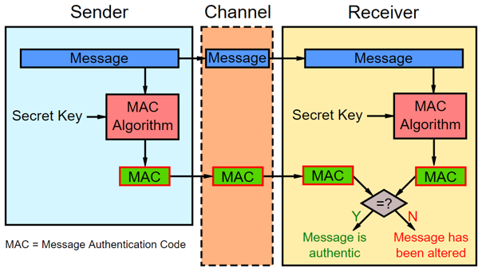

MAC and Key Derivation
Message authentication codes (MAC), HMAC (hash-based message authentication code) and KDF (key derivation functions) play important role in cryptography. Let's explain when we need MAC, how to calculate HMAC and how it is related to key derivation functions.
Message Authentication Code (MAC)
Message Authentication Code (MAC) is cryptographic code, calculated by given key and given message:
auth_code = MAC(key, msg)
Typically, it behaves like a hash function: a minor change in the message or in the key results to totally different MAC value. It should be practically infeasible to change the key or the message and get the same MAC value. MAC codes, like hashes, are irreversible: it is impossible to recover the original message or the key from the MAC code. MAC algorithms are also known as "keyed hash functions", because they behave like a hash function with a key.
For example, the MAC code can be calculated by the HMAC-SHA256 algorithm like this:
HMAC-SHA256('key', 'some msg') = 32885b49c8a1009e6d66662f8462e7dd5df769a7b725d1d546574e6d5d6e76ad
The above HMAC-SHA256 calculation can be coded in Python like this:
import hashlib, hmac, binascii
mac = hmac.new(b'key', b'some msg', hashlib.sha256).digest()
print(binascii.hexlify(mac))
Run the above code example: https://repl.it/@nakov/HMAC-SHA256-in-Python.
The MAC code is digital authenticity code, like a digital signature, but with pre-shared key. We shall learn more about digital signing and digital signatures later.
MAC Algorithms
Many algorithms for calculating message authentication codes (MAC) exist in modern cryptography. The most popular are based on hashing algorithms, like HMAC (Hash-based MAC, e.g. HMAC-SHA256) and KMAC (Keccak-based MAC). Others are based on symmetric ciphers, like CMAC (Cipher-based MAC), GMAC (Galois MAC) and Poly1305 (Bernstein's one-time authenticator). Other MAC algorithms include UMAC (based on universal hashing), VMAC (high-performance block cipher-based MAC) and SipHash (simple, fast, secure MAC).
When We Need MAC Codes?
A sample scenario for using MAC codes is like this:
- Two parties exchange somehow a certain secret MAC key (pre-shared key).
- We receive a msg + auth_code from somewhere (e.g. from Internet, from the blockchain, or from email message).
- We want to be sure that the msg is not tampered, which means that both the key and msg are correct and match the MAC code.
- In case of tampered message, the MAC code will be incorrect.

Authenticated Encryption: Encrypt / Decrypt Messages using MAC
Another scenario to use MAC codes is for authenticated encryption: when we encrypt a message and we want to be sure the decryption password is correct and the decrypted message is the same like the original message before encryption.
- First, we derive a key from the password. We can use this key for the MAC calculation algorithm (directly or hashed for better security).
- Next, we encrypt the message using the derived key and store the ciphertext in the output.
- Finally, we calculate the MAC code using the derived key and the original message and we append it to the output.
When we decrypt the encrypted message (ciphertext + MAC), we proceed as follows:
- First, we derive a key from the password, entered by the user. It might be the correct password or wrong. We shall find out later.
- Next, we decrypt the message using the derived key. It might be the original message or incorrect message (depends on the password entered).
- Finally, we calculate a MAC code using the derived key + the decrypted message.
- If the calculated MAC code matches the MAC code in the encrypted message, the password is correct.
- Otherwise, it will be proven that the decrypted message is not the original message and this means that the password is incorrect
Some authenticated encryption algorithms (such as AES-GCM and ChaCha20-Poly1305) integrate the MAC calculation into the encryption algorithm and the MAC verification into the decryption algorithm. We shall learn more about these algorithms later.
The MAC is stored along with the ciphertext and it does not reveal the password or the original message. Storing the MAC code, visible to anyone is safe, and after decryption, we know whether the message is the original one or not (wrong password).
MAC-Based Pseudo-Random Generator
Another application of MAC codes is for pseudo-random generator functions. We can start from certain salt (constant number or the current date and time or some other randomness) and some seed number (last random number generated, e.g. 0). We can calculate the next_seed as follows:
next_seed = MAC(salt, seed)
This next pseudo-random number is "randomly changed" after each calculation of the above formula and we can use it to generate the next random number in certain range. We shall demonstrated a fully working example in the "Secure Random Generators" chapter.